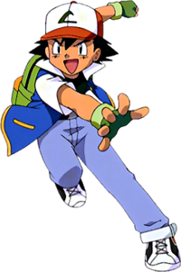

Ash Ketchum is a Pokemon trainer from Pallet Town. Through his journeys, he has made many friends and defeated many gym leaders, all with the help of his fellow sidekick, Pikachu. Although he has been 10 years old for some time now, he has been seen very mature among his peers, almost too mature for his age.
Ash appears in the popular anime/cartoon, Pokemon. The series follows his journey to become the greatest Pokemon trainer ever. He is followed by his friends, Brock and Misty, and his fellow Pokemon, including Pikachu. Many challenges arise for Ash and him and his friends always find a way to overcome those obstacles all while learning about what it means to be a trainer and what it takes to be the best.